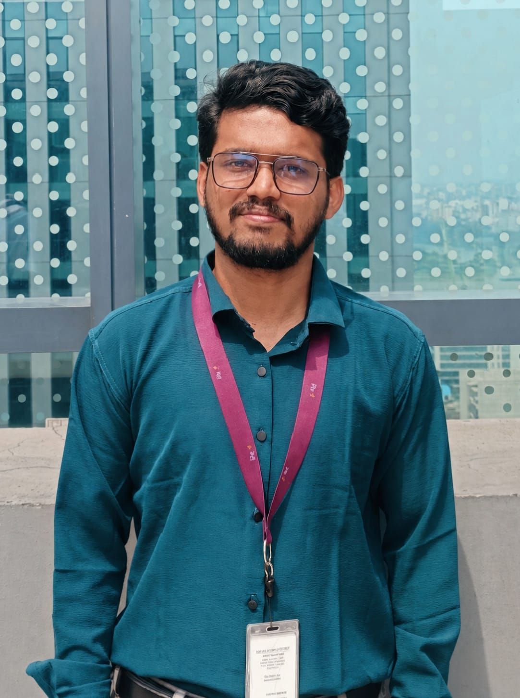

People
BioCodec Lab brings together researchers and collaborators with shared interests in physiological signal processing, intelligent computing, and biomedical sensing.
Founder
Swandip Singha
Undergraduate Researcher
EEE, CUET
RA at Sabuj Lab · Research Intern, ELITE Lab.AI
Scholar
GitHub
LinkedIn
Faculty Advisor
Dr. Saifur Rahman Sabuj
Faculty Advisor
Brain Pool Research Fellow, Hanyang University
Graduate Researchers
Rifat Bin Reza
Graduate Researcher
EEE, BRAC University
Personalized Cardiovascular Digital Twin
Undergraduate Researchers

Md. Saidul Islam
Undergraduate Researcher
EEE, CUET
Decision-Safe ECG Denoising
Pranta Dhar
Undergraduate Researcher
CSE, IIUC
Task-Aware ECG Denoising